Fastmath documentation
Random
Collection of functions which deal with randomness. There are four groups:
- random number generation
- probability distributions
- sequences generators
- noise (value, gradient, simplex)
(require '[fastmath.random :as r])Set initial seed
(r/set-seed! 31337)#object[org.apache.commons.math3.random.JDKRandomGenerator 0x66ec8ec2 "org.apache.commons.math3.random.JDKRandomGenerator@66ec8ec2"]Common functions
List of the functions which work with PRNG and distribution objects:
Random number generation
- First argument should be PRNG or distribution object
- With no additional arguments, functions return:
- full range for integers and longs
- \([0,1)\) for floats and doubles
- Only for PRNGs
- With one additional argument, number from \([0,max)\) range is returned
- With two additional arguments, number form \([min,max)\) range is returned
| Symbol | Info |
|---|---|
|
random integer, returns long |
|
random long |
|
random float, returns boxed float |
|
random double |
Sampling
To generate infinite lazy sequence of random values, call ->seq on given PRNG or distribution. Second (optional) argument can limit number of returned numbers. Third (optional) argument controls sampling method (for given n number of samples), there are the following options:
:antithetic- random values in pairs[r1,1-r1,r2,1-r2,...]:uniform- spacings between numbers follow uniform distribution:systematic- the same spacing with random starting point:stratified- divide \([0,1]\) intonintervals and get random value from each subinterval
| Symbol | Info |
|---|---|
|
sequence of random doubles, sampling |
Seed
| Symbol | Info |
|---|---|
|
sets seed, possibly mutating, returns PRNG or distribution object |
|
creates new instance with given seed |
set-seed!mutates object if it’s supported by underlying Java implementation, can also return newly created object.set-seedis implemented only for PRNGs currently
PRNG
Random number generation is based on PRNG (Pseudorandom Numeber Generator) objects which are responsible for keeping the state. All PRNGs are based on Apache Commons Math 3.6.1 algorithms.
| Algorithm | Description |
|---|---|
|
Mersenne Twister |
|
ISAAC, cryptographically secure PRNG |
|
WELL \(2^{512}-1\) period, variant a |
|
WELL \(2^{1024}-1\) period, variant a |
|
WELL \(2^{19937}-1\) period, variant a |
|
WELL \(2^{19937}-1\) period, variant c |
|
WELL \(2^{44497}-1\) period, variant a |
|
WELL \(2^{44497}-1\) period, variant b |
|
java.util.Random instance, thread safe |
To create PRNG, call rng with algorithm name (as a keyword) and optional seed parameter.
| Symbol | Info |
|---|---|
|
Create PRNG with optional seed |
|
Wrap PRNG to ensure thread safety |
(r/rng :isaac) ;; => #object[org.apache.commons.math3.random.ISAACRandom 0xfec6c91 "org.apache.commons.math3.random.ISAACRandom@fec6c91"]
(r/rng :isaac 5336) ;; => #object[org.apache.commons.math3.random.ISAACRandom 0x3b794449 "org.apache.commons.math3.random.ISAACRandom@3b794449"]
(r/synced-rng (r/rng :isaac)) ;; => #object[org.apache.commons.math3.random.SynchronizedRandomGenerator 0x71cf2d46 "org.apache.commons.math3.random.SynchronizedRandomGenerator@71cf2d46"]Functions
Two additional functions are supported by PRNGs
| Symbol | Info |
|---|---|
|
random gaussian |
|
random boolean |
grandom- 1-arity - returns random number from Normal (Gaussian) distribution, N(0,1)
- 2-arity - N(0,stddev)
- 3-arity - N(mean, stddev)
brandom- 1-arity - returns true/false with probability=0.5
- 2-arity - returns true with given probability
All examples will use Mersenne Twister PRNG with random seed
(def my-prng (r/rng :mersenne))(r/irandom my-prng) ;; => -1288920385
(r/irandom my-prng 5) ;; => 0
(r/irandom my-prng 10 20) ;; => 11
(r/lrandom my-prng) ;; => -5601227250026431579
(r/lrandom my-prng 5) ;; => 4
(r/lrandom my-prng 10 20) ;; => 13
(r/frandom my-prng) ;; => 0.8250451
(r/frandom my-prng 2.5) ;; => 1.8744171
(r/frandom my-prng 10.1 10.11) ;; => 10.102425
(r/drandom my-prng) ;; => 0.501582979378931
(r/drandom my-prng 2.5) ;; => 1.2613013440813563
(r/drandom my-prng 10.1 10.11) ;; => 10.106774883638437
(r/grandom my-prng) ;; => -0.1993582367527933
(r/grandom my-prng 20.0) ;; => -29.5759262742231
(r/grandom my-prng 10.0 20.0) ;; => 40.349429784124744
(r/brandom my-prng) ;; => true
(r/brandom my-prng 0.01) ;; => false
(r/brandom my-prng 0.99) ;; => trueSampling
(take 2 (r/->seq my-prng)) ;; => (0.4885078825668323 0.15425525692104602)
(r/->seq my-prng 2) ;; => (0.48123476900291196 0.1719564716464419)
(r/->seq my-prng 5 :antithetic) ;; => (0.6323930340757877 0.36760696592421227 0.957265845484343 0.042734154515656986 0.13880057194340023)
(r/->seq my-prng 5 :uniform) ;; => (0.029369326314847757 0.16613132046622597 0.552987795373908 0.6143919048695375 0.7421264053684221)
(r/->seq my-prng 5 :systematic) ;; => (0.12207801919447712 0.32207801919447715 0.522078019194477 0.7220780191944771 0.9220780191944771)
(r/->seq my-prng 5 :stratified) ;; => (0.15036576820310113 0.39288747613351066 0.4024569446899115 0.6813400263610344 0.9067794745388689)Seed
Let’s define two copies of the same PRNG with the same seed. Second one is obtained by setting a seed new seed.
(def isaac-prng (r/rng :isaac 9988))(def isaac-prng2 ;; new instance
(r/set-seed isaac-prng 12345))(r/->seq isaac-prng 3) ;; => (0.2017025716542833 0.18388677470983206 0.956730341010493)
(r/->seq isaac-prng2 3) ;; => (0.9750469483729258 0.8824640458238968 0.931330617691251)
(r/->seq isaac-prng 3) ;; => (0.5016097251798766 0.9741775702598627 0.4876589891468033)
(r/->seq isaac-prng2 3) ;; => (0.7878968013812606 0.4365686819291106 0.9175915936830081)Let’s now reseed both PRNGs
(r/set-seed! isaac-prng 9988)#object[org.apache.commons.math3.random.ISAACRandom 0x7e7ba061 "org.apache.commons.math3.random.ISAACRandom@7e7ba061"](r/set-seed! isaac-prng2 9988)#object[org.apache.commons.math3.random.ISAACRandom 0x11e3dbfe "org.apache.commons.math3.random.ISAACRandom@11e3dbfe"](r/->seq isaac-prng 3) ;; => (0.2017025716542833 0.18388677470983206 0.956730341010493)
(r/->seq isaac-prng2 3) ;; => (0.2017025716542833 0.18388677470983206 0.956730341010493)Default PRNG
There is defined one global variable default-rng which is synchonized :jvm PRNG. Following set of functions work on this particular PRNG. The are the same as xrandom, ie (irand) is the same as (irandom default-rng).
| Symbol | Info |
|---|---|
|
random integer, as long |
|
random long |
|
random float as boxed Float |
|
random double |
|
random gaussian |
|
random boolean |
|
returns infinite lazy sequence |
|
seeds default-rng, returns new instance |
|
seeds default-rng and Smile's RNG |
(r/irand) ;; => 105368218
(r/irand 5) ;; => 3
(r/irand 10 20) ;; => 19
(r/lrand) ;; => -6326787748595902987
(r/lrand 5) ;; => 4
(r/lrand 10 20) ;; => 16
(r/frand) ;; => 0.20756257
(r/frand 2.5) ;; => 0.95548046
(r/frand 10.1 10.11) ;; => 10.105913
(r/drand) ;; => 0.5293197586726303
(r/drand 2.5) ;; => 0.5856958321231587
(r/drand 10.1 10.11) ;; => 10.10447314352286
(r/grand) ;; => 2.1340019834469315
(r/grand 20.0) ;; => -33.23574732491791
(r/grand 10.0 20.0) ;; => 11.061399646894813
(r/brand) ;; => false
(r/brand 0.01) ;; => false
(r/brand 0.99) ;; => true
(take 3 (r/->seq)) ;; => (0.8820950564851541 0.8432355490117891 0.7757833765798361)
r/default-rng ;; => #object[org.apache.commons.math3.random.JDKRandomGenerator 0x66ec8ec2 "org.apache.commons.math3.random.JDKRandomGenerator@66ec8ec2"]
(r/set-seed) ;; => #object[org.apache.commons.math3.random.JDKRandomGenerator 0x38c4e95e "org.apache.commons.math3.random.JDKRandomGenerator@38c4e95e"]
(r/set-seed 9988) ;; => #object[org.apache.commons.math3.random.JDKRandomGenerator 0x4ee2a9f5 "org.apache.commons.math3.random.JDKRandomGenerator@4ee2a9f5"]
(r/set-seed!) ;; => #object[org.apache.commons.math3.random.JDKRandomGenerator 0x66ec8ec2 "org.apache.commons.math3.random.JDKRandomGenerator@66ec8ec2"]
(r/set-seed! 9988) ;; => #object[org.apache.commons.math3.random.JDKRandomGenerator 0x66ec8ec2 "org.apache.commons.math3.random.JDKRandomGenerator@66ec8ec2"]Additionally there are some helpers:
| Symbol | Info |
|---|---|
|
A macro, returns value with given probability (default true/false with prob=0.5) |
|
Returns 1 with given probability (or 0) |
|
Returns true with given probability |
|
Returns a result of rolling a n-sides dice(s) |
(r/randval) ;; => false
(r/randval 0.99) ;; => true
(r/randval 0.01) ;; => false
(r/randval :value1 :value2) ;; => :value2
(r/randval 0.99 :highly-probable-value :less-probably-value) ;; => :highly-probable-value
(r/randval 0.01 :less-probably-value :highly-probable-value) ;; => :highly-probable-value
(repeatedly 10 r/flip) ;; => (0 1 1 1 0 0 1 0 0 0)
(repeatedly 10 (fn* [] (r/flip 0.8))) ;; => (1 1 1 1 1 1 1 0 1 1)
(repeatedly 10 (fn* [] (r/flip 0.2))) ;; => (0 0 0 0 0 0 0 0 0 0)
(repeatedly 10 r/flipb) ;; => (true true false true true false false true false true)
(repeatedly 10 (fn* [] (r/flipb 0.8))) ;; => (true true false true false true true false true true)
(repeatedly 10 (fn* [] (r/flipb 0.2))) ;; => (false false false false true false false false false false)
(r/roll-a-dice 6) ;; => 6
(r/roll-a-dice 100) ;; => 30
(r/roll-a-dice 10 6) ;; => 31Above helpers can accept custom PRNG
(def isaac3-prng (r/rng :isaac 1234))| Symbol | Info |
|---|---|
|
A macro, returns value with given probability (default true/false with prob=0.5) |
|
Returns 1 with given probability (or 0) |
|
Returns true with given probability |
|
Returns a result of rolling a n-sides dice(s) |
(r/randval-rng isaac3-prng) ;; => false
(r/randval-rng isaac3-prng 0.99) ;; => true
(r/randval-rng isaac3-prng 0.01) ;; => false
(r/randval-rng isaac3-prng :value1 :value2) ;; => :value1
(r/randval-rng isaac3-prng 0.99 :highly-probable-value :less-probably-value) ;; => :highly-probable-value
(r/randval-rng isaac3-prng 0.01 :less-probably-value :highly-probable-value) ;; => :highly-probable-value
(repeatedly 10 (fn* [] (r/flip-rng isaac3-prng))) ;; => (0 0 0 1 1 0 0 1 0 1)
(repeatedly 10 (fn* [] (r/flip-rng isaac3-prng 0.8))) ;; => (1 0 0 0 1 1 1 1 1 1)
(repeatedly 10 (fn* [] (r/flip-rng isaac3-prng 0.2))) ;; => (1 0 0 0 1 0 0 0 0 1)
(repeatedly 10 (fn* [] (r/flipb-rng isaac3-prng))) ;; => (false false true false false true true false false true)
(repeatedly 10 (fn* [] (r/flipb-rng isaac3-prng 0.8))) ;; => (false true false true true true true true false false)
(repeatedly 10 (fn* [] (r/flipb-rng isaac3-prng 0.2))) ;; => (false false true true false false false false false false)
(r/roll-a-dice-rng isaac3-prng 6) ;; => 1
(r/roll-a-dice-rng isaac3-prng 100) ;; => 12
(r/roll-a-dice-rng isaac3-prng 10 6) ;; => 30Distributions
Collection of probability distributions.
| Symbol | Info |
|---|---|
|
Distribution creator, a multimethod |
(r/distribution :cauchy) ;; => #object[org.apache.commons.math3.distribution.CauchyDistribution 0x6833db1c "org.apache.commons.math3.distribution.CauchyDistribution@6833db1c"]
(r/distribution :cauchy {:median 2.0, :scale 2.0}) ;; => #object[org.apache.commons.math3.distribution.CauchyDistribution 0x412f3f72 "org.apache.commons.math3.distribution.CauchyDistribution@412f3f72"]Functions
| Symbol | Info |
|---|---|
|
checks if given object is a distribution |
|
probability density (for continuous) or probability mass (for discrete) |
|
log of pdf |
|
log of pdf, alias of lpdf |
|
cumulative density or probability, distribution |
|
complementary cdf, 1-cdf |
|
inverse cdf, quantiles |
|
returns random sample |
|
number of dimensions |
|
is distribution continuous (true) or discrete (false)? |
|
sum of lpdfs for given seq of samples |
|
macro version of log-likelihood |
|
exp of log-likelihood |
|
distribution mean |
|
distribution means for multivariate distributions |
|
distribution variance |
|
covariance for multivariate distributions |
|
support lower bound |
|
support upper bound |
|
name of distribution |
|
list of parameters |
|
construct cdf and icdf out of pdf function |
distribution-parametersby default returns only obligatory parameters, when last argument istrue, returns also optional parameters, for example:rngdrandom,frandom,lrandomandirandomwork only on univariate distributionslrandomandirandomuseround-evento convert double to integer.cdf,ccdfandicdfare defined only for univariate distributions
Examples
Let’s define Beta, Dirichlet and Bernoulli distributions as examples of univariate continuous, multivariate continuous and univariate discrete.
Log-logistic, univariate continuous
(def log-logistic (r/distribution :log-logistic {:alpha 3 :beta 7}))(r/drandom log-logistic) ;; => 9.38119207031292
(r/frandom log-logistic) ;; => 9.632276
(r/lrandom log-logistic) ;; => 5
(r/irandom log-logistic) ;; => 7
(r/sample log-logistic) ;; => 8.365576487707175
(r/distribution? log-logistic) ;; => true
(r/distribution? 2.3) ;; => false
(r/pdf log-logistic 1) ;; => 0.008695578691184421
(r/lpdf log-logistic 1) ;; => -4.744940578912748
(r/observe1 log-logistic 1) ;; => -4.744940578912748
(r/cdf log-logistic 1) ;; => 0.0029069767441860456
(r/ccdf log-logistic 1) ;; => 0.997093023255814
(r/icdf log-logistic 0.002907) ;; => 1.0000026744341148
(r/dimensions log-logistic) ;; => 1
(r/continuous? log-logistic) ;; => true
(r/log-likelihood log-logistic (range 1 10)) ;; => -24.684504975903153
(r/observe log-logistic (range 1 10)) ;; => -24.684504975903153
(r/likelihood log-logistic (range 1 10)) ;; => 1.9039507073388636E-11
(r/mean log-logistic) ;; => 8.464397033093016
(r/variance log-logistic) ;; => 46.85554132946835
(r/lower-bound log-logistic) ;; => 0.0
(r/upper-bound log-logistic) ;; => ##Inf
(r/distribution-id log-logistic) ;; => :log-logistic
(r/distribution-parameters log-logistic) ;; => [{:alpha 3, :beta 7}]
(r/distribution-parameters log-logistic true) ;; => [:rng {:alpha 3, :beta 7}]Dirichlet, multivariate continuous
(def dirichlet (r/distribution :dirichlet {:alpha [1 2 3]}))(r/sample dirichlet) ;; => [0.5266513175880663 0.20201103895118547 0.2713376434607484]
(reduce + (r/sample dirichlet)) ;; => 1.0
(r/distribution? dirichlet) ;; => true
(r/pdf dirichlet [0.5 0.1 0.4]) ;; => 0.9600000000000001
(r/lpdf dirichlet [0.5 0.1 0.4]) ;; => -0.040821994520255034
(r/observe1 dirichlet [0.5 0.1 0.4]) ;; => -0.040821994520255034
(r/dimensions dirichlet) ;; => 3
(r/continuous? dirichlet) ;; => true
(r/log-likelihood dirichlet (repeatedly 10 (fn* [] (r/sample dirichlet)))) ;; => 13.684664778905477
(r/observe dirichlet (repeatedly 10 (fn* [] (r/sample dirichlet)))) ;; => 13.748577940989582
(r/likelihood dirichlet (repeatedly 10 (fn* [] (r/sample dirichlet)))) ;; => 39299.27282047337
(r/means dirichlet) ;; => (0.16666666666666666 0.3333333333333333 0.5)
(r/covariance dirichlet) ;; => [[0.019841269841269844 -0.007936507936507936 -0.011904761904761904] [-0.007936507936507936 0.03174603174603175 -0.023809523809523808] [-0.011904761904761904 -0.023809523809523808 0.03571428571428571]]
(r/distribution-id dirichlet) ;; => :dirichlet
(r/distribution-parameters dirichlet) ;; => [:alpha]
(r/distribution-parameters dirichlet true) ;; => [:alpha :rng]- multivariate distributions don’t implement some of the functions, like
drandomorcdf,icdf, etc.
Poisson, univariate discrete
(def poisson (r/distribution :poisson {:p 10}))(r/drandom poisson) ;; => 5.0
(r/frandom poisson) ;; => 7.0
(r/lrandom poisson) ;; => 6
(r/irandom poisson) ;; => 7
(r/sample poisson) ;; => 13
(r/distribution? poisson) ;; => true
(r/pdf poisson 5) ;; => 0.03783327480207072
(r/lpdf poisson 5) ;; => -3.274566277811817
(r/observe1 poisson 5) ;; => -3.274566277811817
(r/cdf poisson 5) ;; => 0.0670859628790319
(r/ccdf poisson 5) ;; => 0.9329140371209681
(r/icdf poisson 0.999) ;; => 21
(r/dimensions poisson) ;; => 1
(r/continuous? poisson) ;; => false
(r/log-likelihood poisson (range 1 10)) ;; => -35.34496599408817
(r/observe poisson (range 1 10)) ;; => -35.34496599408817
(r/likelihood poisson (range 1 10)) ;; => 4.46556387351644E-16
(r/mean poisson) ;; => 10.0
(r/variance poisson) ;; => 10.0
(r/lower-bound poisson) ;; => 0.0
(r/upper-bound poisson) ;; => 2.147483647E9
(r/distribution-id poisson) ;; => :poisson
(r/distribution-parameters poisson) ;; => [:p]
(r/distribution-parameters poisson true) ;; => [:rng :p :epsilon :max-iterations]PDF integration
integrate-pdf returns a pair of CDF and iCDF functions using Romberg integration and interpolation. Given interval is divided into steps number of subinterval. Each subinteval is integrated and added to cumulative sum. All points a later interpolated to build CDF and iCDF.
Parameters list:
| Symbol | Info |
|---|---|
|
PDF, univariate double->double function |
|
lower bound, value of PDF(mn) should be 0.0 |
|
upper bound |
|
number of subintervals |
|
minimum number of Romberg integrator iterations (default: 3, minimum 2) |
|
one of: `:linear` (default), `:spline`, `:monotone` or any `fastmath.interpolator` method |
Let’s compare cdf and icdf to integrated pdf of beta distribution
(def beta (r/distribution :beta))(def integrated (r/integrate-pdf (partial r/pdf beta)
{:mn -0.001 :mx 1.001 :steps 10000
:interpolator :spline}))(def beta-cdf (first integrated))(def beta-icdf (second integrated))(r/cdf beta 0.5) ;; => 0.890625
(beta-cdf 0.5) ;; => 0.890624992926758
(r/icdf beta 0.5) ;; => 0.26444998329511316
(beta-icdf 0.5) ;; => 0.26444998499009115Sampling
(def weibull (r/distribution :weibull))(r/sample weibull) ;; => 1.660596406669419
(r/->seq weibull 3) ;; => (1.429808601277931 0.6239351187186042 0.22901862086355926)
(r/->seq weibull 5 :antithetic) ;; => (0.8789298248121516 0.7871567720020644 0.3359031152662685 1.4959111180822753 0.5761405777290171)
(r/->seq weibull 5 :uniform) ;; => (0.27819628819981307 0.5105865483391676 0.6372189139644687 1.1425580683435526 1.7502730290537003)
(r/->seq weibull 5 :systematic) ;; => (0.42415794076771685 0.6734882729621214 0.911929539913042 1.2027888245275842 1.8282741464907257)
(r/->seq weibull 5 :stratified) ;; => (0.400168757730896 0.6539622749107047 0.891072131829612 1.1739728271224017 1.719290334861315)PRNG and seed
All distributions accept :rng optional parameter which is used internally for random number generation. By default, creator constructs custom PRNG instance.
(def cauchy-mersenne-2288 (r/distribution :cauchy {:rng (r/rng :mersenne 2288)}))(vec (r/->seq cauchy-mersenne-2288 3)) ;; => [-0.1079136480774541 -5.558982159984645 -3.127061922456471]
(vec (r/->seq cauchy-mersenne-2288 3)) ;; => [8.13804818209913 1.6141542337020716 -0.6694661861436221]
(r/set-seed! cauchy-mersenne-2288 2288) ;; => #object[org.apache.commons.math3.distribution.CauchyDistribution 0x22f767ce "org.apache.commons.math3.distribution.CauchyDistribution@22f767ce"]
(vec (r/->seq cauchy-mersenne-2288 3)) ;; => [-0.1079136480774541 -5.558982159984645 -3.127061922456471]Default Normal
| Symbol | Info |
|---|---|
|
public var which is a normal distribution N(0,1), thread-safe |
(r/->seq r/default-normal 3) ;; => (0.27270306571120556 -0.11068556832645735 0.8582708703487653)
(r/pdf r/default-normal 0.0) ;; => 0.3989422804014327
(r/cdf r/default-normal 0.0) ;; => 0.5
(r/icdf r/default-normal 0.5) ;; => 0.0
(r/mean r/default-normal) ;; => 0.0
(r/variance r/default-normal) ;; => 1.0Univariate, cont.
| name | parameters |
|---|---|
|
|
|
|
|
|
|
|
|
|
|
|
|
|
|
|
|
|
|
|
|
|
|
|
|
|
|
|
|
|
|
|
|
|
|
|
|
|
|
|
|
|
|
|
|
|
|
|
|
|
|
|
|
|
|
|
|
|
|
|
|
|
|
|
|
|
|
|
|
|
|
|
|
|
|
|
|
|
|
|
|
|
|
|
|
|
|
|
|
|
|
|
|
|
|
|
|
|
Anderson-Darling
Distribution of Anderson-Darling statistic \(A^2\) on \(n\) independent uniforms \(U[0,1]\).
- Name:
:anderson-darling - Default parameters:
:n: \(1\)
- source
|
|
| 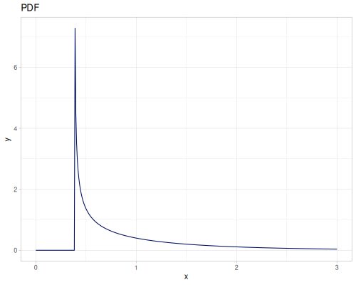 |
Beta
|
|
|
|
Cauchy
|
|
| 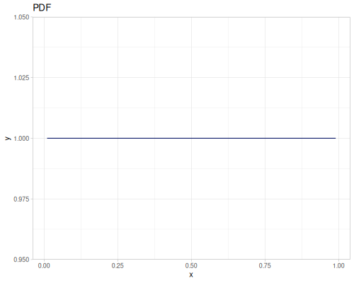 |
Chi
|
|
Chi-squared
|
|
| 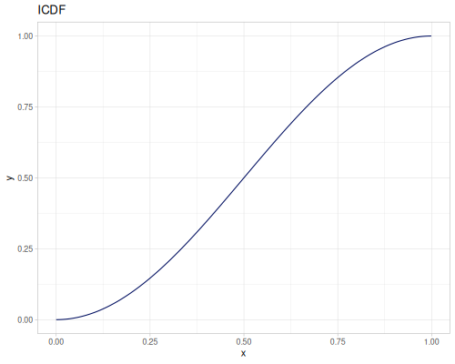 |
Chi-squared noncentral
- Name:
:chi-squared-noncentral - Default parameters:
:nu, degrees-of-freedom: \(1.0\):lambda, noncentrality: \(1.0\)
- source
|
|
Cramer-von Mises
Distribution of Cramer-von Mises statistic \(W^2\) on \(n\) independent uniforms \(U[0,1]\).
- Name:
:cramer-von-mises - Default parameters
:n: \(1\)
- source
Note: PDF is calculated using finite difference method from CDF.
|
|
| 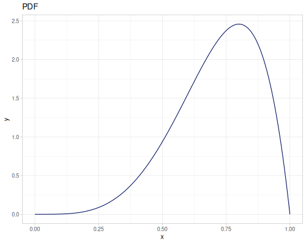 |
Erlang
|
|
ex-Gaussian
- Name:
:exgaus - Default parameters
:mu, mean: \(5.0\):sigma, standard deviation: \(1.0\):nu, mean of exponential variable: \(1.0\)
- wiki, source
|
|
| 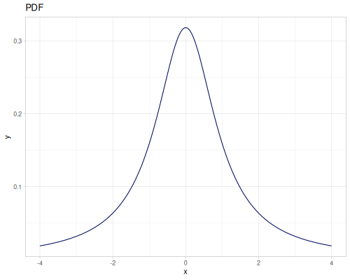 |
Exponential
|
|
| 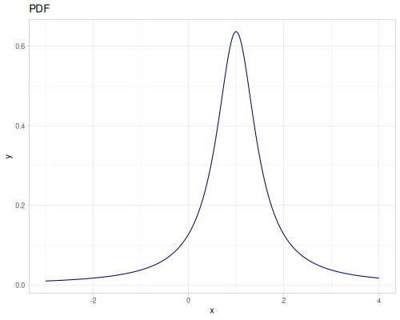 |
F
- Name:
:f - Default parameters
:numerator-degrees-of-freedom: \(1.0\):denominator-degrees-of-freedom: \(1.0\)
- wiki, source
|
| 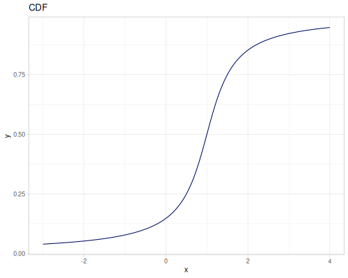 |
|
Fatigue life
- Name:
:fatigue-life - Default parameters
:mu, location: \(0.0\):beta, scale: \(1.0\):gamma, shape: \(1.0\)
- wiki, source
|
|
 |
Folded Normal
|
|
 |
Frechet
- Name:
:frechet - Default parameters
:delta, location: \(0.0\):alpha, shape: \(1.0\):beta, scale: \(1.0\)
- wiki, source
|
|
Gamma
|
|
| 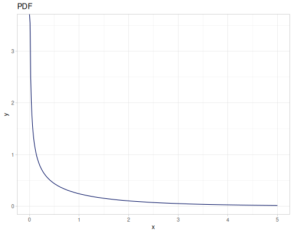 | 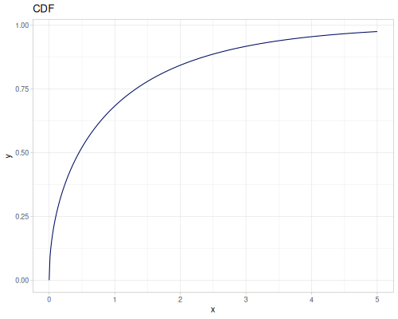 |
Gumbel
|
|
| 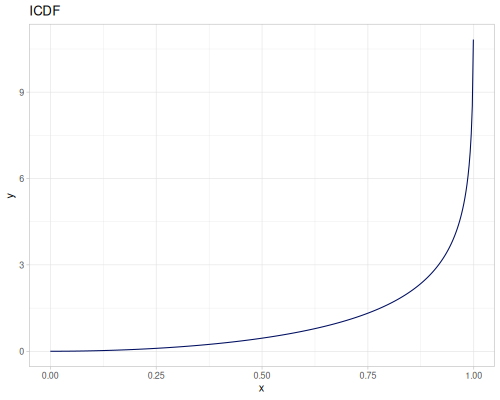 | 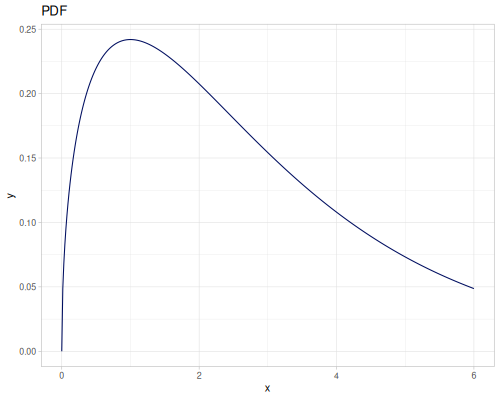 |
Half Cauchy
- Name:
:half-cauchy - Default parameters
:scale: \(1.0\)
- info
|
|
Half Normal
- Name:
:half-normal - Default parameters
:sigma: \(1.0\)
- wiki
|
|
| 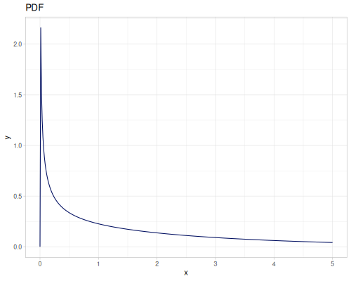 |
Hyperbolic secant
|
|
| 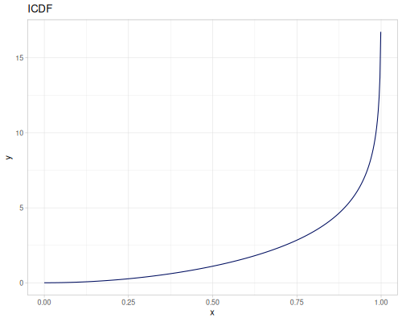 |
Hypoexponential
|
|
Hypoexponential equal
Hypoexponential distribution, where \(\lambda_i=(n+1-i)h,\text{ for } i=1\dots k\)
- Name:
:hypoexponential-equal - Default parameters
:k, number of rates: \(1\):h, difference between rates: \(1\):n\(=\frac{\lambda_1}{h}\): \(1\)
- source
|
|
| 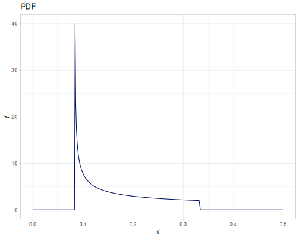 |
Inverse Gamma
|
|
| 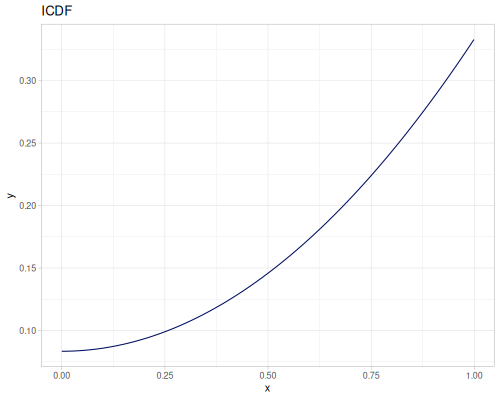 |
Inverse Gaussian
- Name:
:inverse-gaussian - Default parameters
|
|
Johnson Sb
- Name:
:johnson-sb - Default parameters
:gamma, shape: \(0.0\):delta, shape: \(1.0\):xi, location: \(0.0\):lambda, scale: \(1.0\)
- wiki, source
|
|
Johnson Sl
- Name:
:johnson-sl - Default parameters
:gamma, shape: \(0.0\):delta, shape: \(1.0\):xi, location: \(0.0\):lambda, scale: \(1.0\)
- source
|
|
 |
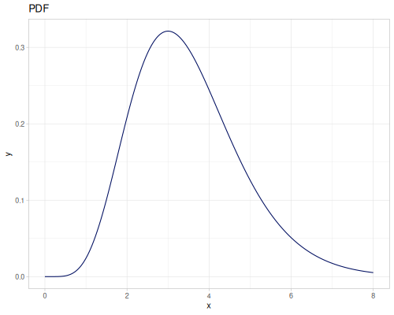 |
Johnson Su
- Name:
:johnson-su - Default parameters
:gamma, shape: \(0.0\):delta, shape: \(1.0\):xi, location: \(0.0\):lambda, scale: \(1.0\)
- wiki, source
|
|
| 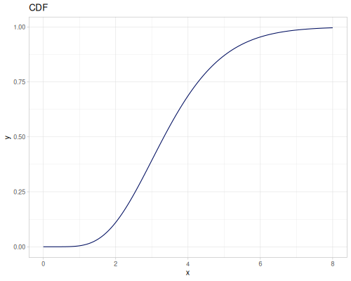 |
Kolmogorov
Kolmogorov-Smirnov
- Name:
:kolmogorov-smirnov - Default parameters
:n, sample size: 1
- source
|
|
| 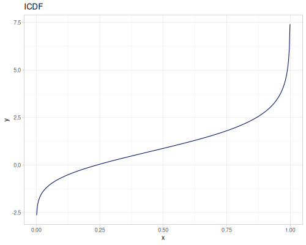 |
Kolmogorov-Smirnov+
- Name:
:kolmogorov-smirnov+ - Default parameters
:n, sample size: 1
- source
|
|
| 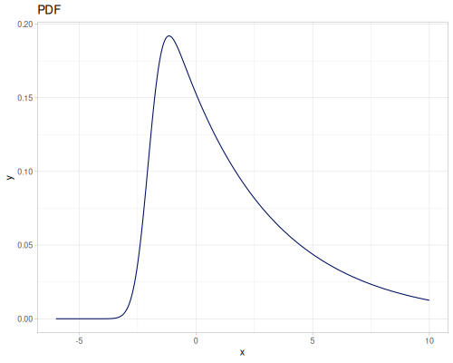 |
Laplace
|
|
Levy
|
|
 |
Log Logistic
|
|
Log Normal
|
|
| 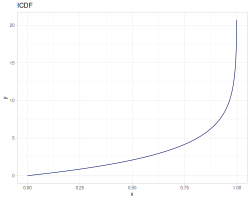 |
Logistic
|
|
| 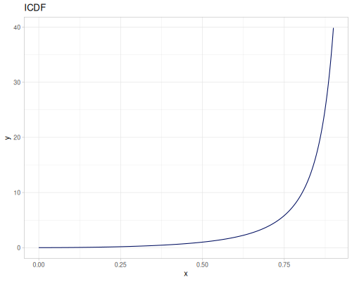 |
Nakagami
|
|
Normal
|
|
| 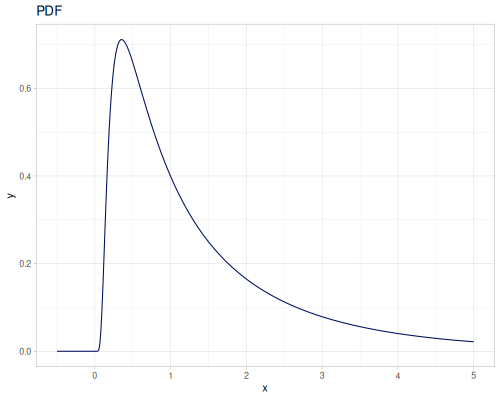 |
Normal-Inverse Gaussian
- Name:
:normal-inverse-gaussian - Default parameters
:alpha, tail heavyness: \(1.0\):beta, assymetry: \(0.0\):mu, location: \(0.0\):delta, scale: \(1.0\)
- wiki, source
Only PDF is supported, you may call integrate-pdf to get CDF and iCDF pair.
|
|
| 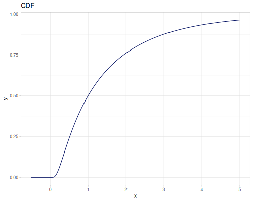 |
(let [[cdf icdf] (r/integrate-pdf
(partial r/pdf (r/distribution :normal-inverse-gaussian))
{:mn -800.0 :mx 800.0 :steps 5000
:interpolator :monotone})]
[(cdf 0.0) (icdf 0.5)])[0.5000000000001334 -2.5040386431030015E-13]| CDF | iCDF |
Pareto
|
|
Pearson VI
|
|
| 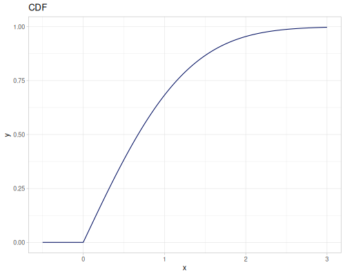 |  |
Power
- Name:
:power - Default parameters
:a: \(0.0\):b: \(1.0\):c: \(2.0\)
- source
|
|
| 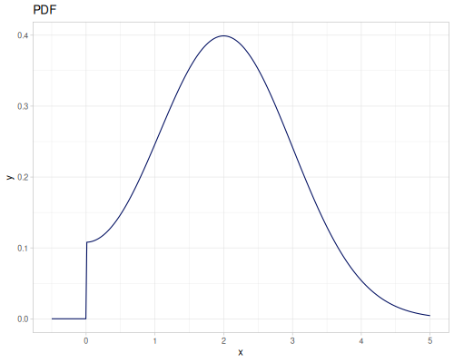 |
Rayleigh
|
|
| 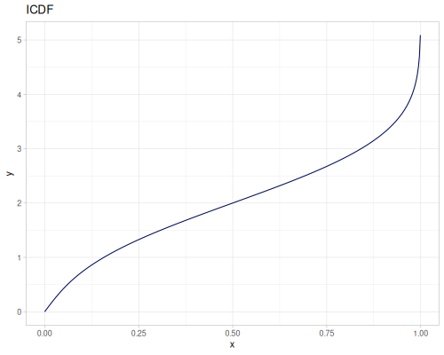 |
Reciprocal Sqrt
\(\operatorname{PDF}(x)=\frac{1}{\sqrt{x}}, x\in(a,(\frac{1}{2}(1+2\sqrt{a}))^2)\)
- Name:
:reciprocal-sqrt - Default parameters
:a, location, lower limit: \(0.5\)
|
|
| 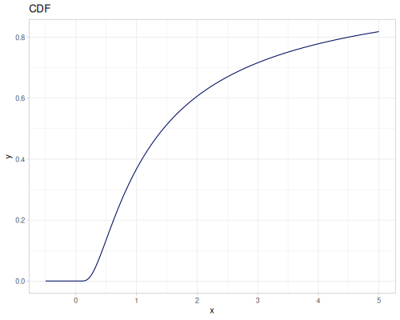 | 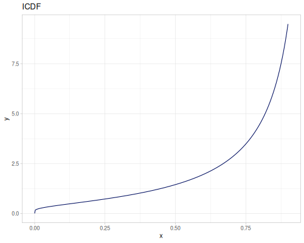 |
Student’s t
|
|
| 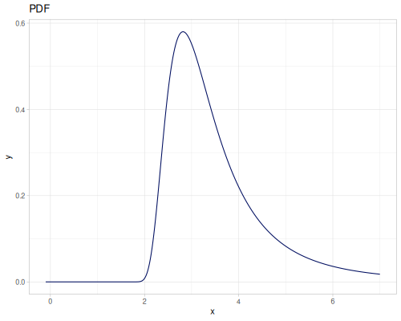 |
Triangular
- Name:
:triangular - Default parameters
:a, lower limit: \(-1.0\):b, mode: \(0.0\):c, upper limit: \(1.0\)
- wiki, source
|
|
Uniform
- Name:
:uniform-real - Default parameters
:lower, lower limit: \(0.0\):upper, upper limit: \(1.0\)
- wiki, source
|
|
| 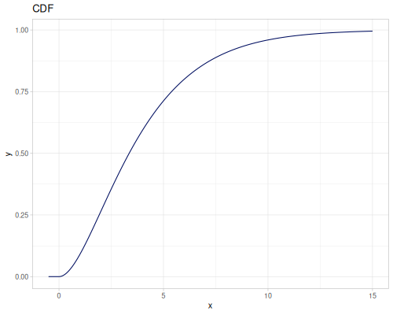 | 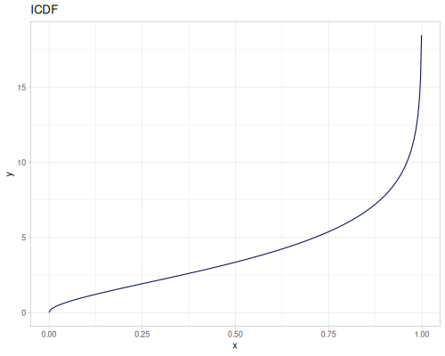 |
Watson G
- Name:
:watson-g - Default parameters
:n: \(2\)
- source
|
|
| 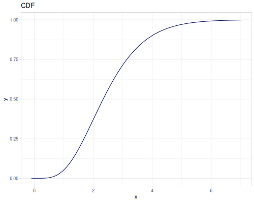 |
Watson U
- Name:
:watson-u - Default parameters
:n: \(2\)
- source
|
|
| 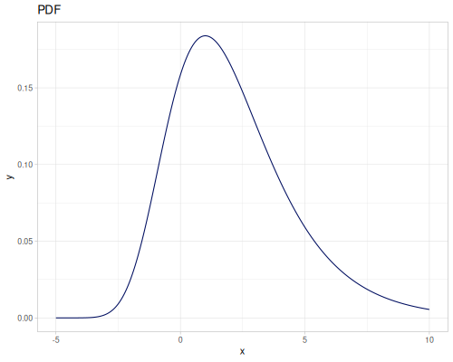 |
Weibull
|
|
| 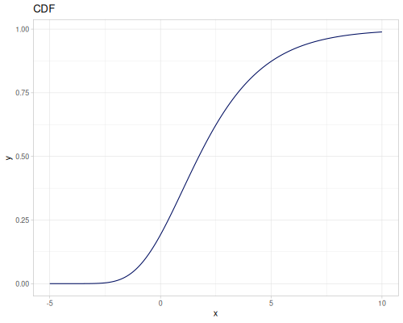 | 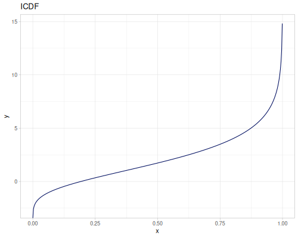 |
Zero adjusted Gamma (zaga)
- Name:
:zaga - Default parameters:
:mu, location: \(0.0\):sigma, scale: \(1.0\):nu, density at 0.0: \(0.1\):lower-tail?- true
- source, book
|
|
| 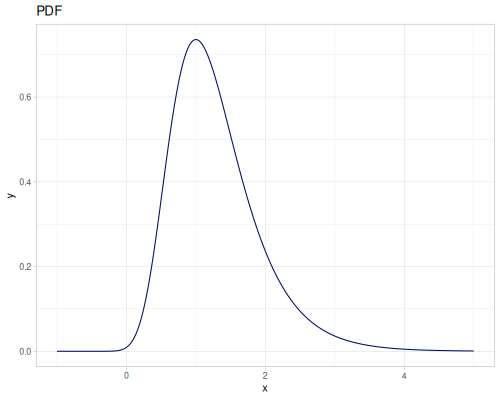 | 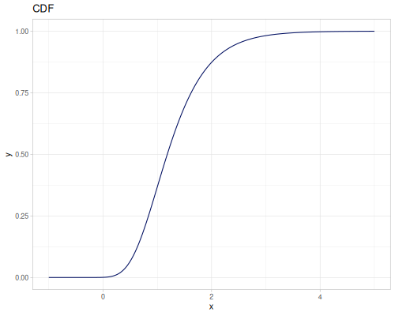 |
Univariate, discr.
| name | parameters |
|---|---|
|
|
|
|
|
|
|
|
|
|
|
|
|
|
|
|
|
|
|
|
|
|
|
|
|
|
|
|
|
|
|
|
|
|
|
|
|
|
|
|
|
|
Beta Binomial (bb)
- Name:
:bb - Default parameters
:mu, probability: \(0.5\):sigma, dispersion: \(1.0\):bd, binomial denominator: \(10\)
- wiki, source
Parameters \(\mu,\sigma\) in terms of \(\alpha, \beta\) (Wikipedia definition)
- probability: \(\mu=\frac{\alpha}{\alpha+\beta}\)
- dispersion: \(\sigma=\frac{1}{\alpha+\beta}\)
|
|
 |
Bernoulli
The same as Binomial with trials=1.
- Name:
:bernoulli - Default parameters
:p, probability, \(0.5\)
- wiki
|
|
Binomial
|
|
Fisher’s noncentral hypergeometric
- Name:
:fishers-noncentral-hypergeometric - Default parameters
:ns, number of sucesses: \(10\):nf, number of failures: \(10\):n, sample size, (\(n<ns+nf\)): \(5\):omega, odds ratio: \(1\)
- wiki, source
|
|
Geometric
|
|
Hypergeometric
- Name:
:hypergeometric - Default parameters
:population-size: \(100\):number-of-successes: $50%:sample-size: $25%
- wiki, source
|
| 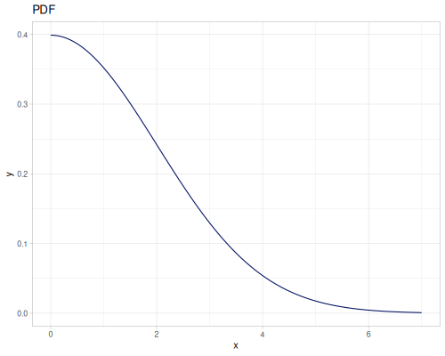 |
|
| 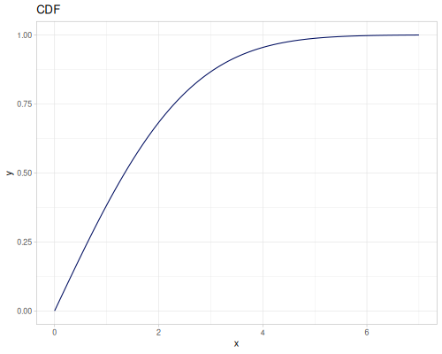 |
Logarithmic
|
|
Negative binomial
- Name:
:negative-binomial - Default parameters
:r, number of successes: \(20\), can be a real number.:p, probability of success: \(0.5\)
- wiki
|
|
|
Pascal
The same as :negative-binomial but r is strictly integer
- Name:
:pascal - Default parameters
:r, number of successes: \(20\):p, probability of success: \(0.5\)
- wiki, source
|
|
Poisson
|
|
 |
 |
Uniform
- Name:
:uniform-int - Default parameters
:lower, lower bound: \(0\):upper, upper bound: \(2147483647\)
- wiki,source
|
|
 |
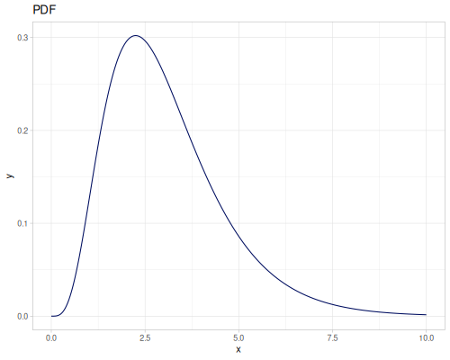 |
Zero Adjusted Beta Binomial (zabb)
- Name:
:zabb - Default parameters
:mu, probability: \(0.5\):sigma, dispersion: \(0.1\):nu, probability at 0.0: \(0.1\):bd, binomial denominator: \(1\)
- source, book
|
|
Zero Adjusted Binomial (zabi)
- Name:
:zabi - Default parameters
:mu, probability: \(0.5\):sigma, probability at 0.0: \(0.1\):bd, binomial denominator: \(1\)
- source, book
|
|
 |
 |
Zero Adjusted Negative Binomial (zanbi)
- Name:
:zanbi - Default parameters
:mu, mean: \(1.0\):sigma, dispersion: \(1.0\):nu, probability at 0.0: \(0.3\)
- source, book
|
|
 |
Zero Inflated Beta Binomial (zibb)
- Name:
:zibb - Default parameters
:mu, probability: \(0.5\):sigma, dispersion: \(0.1\):nu, probability factor at 0.0: \(0.1\):bd, binomial denominator: \(1\)
- source, book
|
|
Zero Inflated Binomial (zibi)
- Name:
:zibi - Default parameters
:mu, probability: \(0.5\):sigma, probability factor at 0.0: \(0.1\):bd, binomial denominator: \(1\)
- source, book
|
|
| 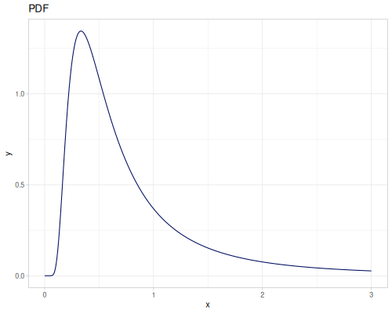 |
Zero Inflated Negative Binomial (zinbi)
- Name:
:zinbi - Default parameters
:mu, mean: \(1.0\):sigma, dispersion: \(1.0\):nu, probability factor at 0.0: \(0.3\)
- source, book
|
|
Zero Inflated Poisson (zip)
|
|
| 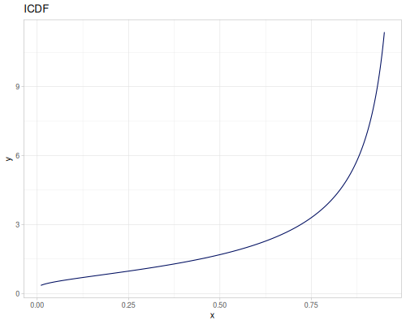 |
Zero Inflated Poisson, type 2 (zip2)
|
|
| 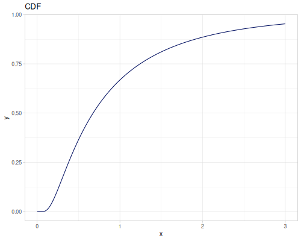 |
Zipf
|
|
| 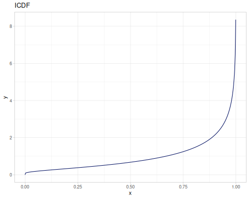 |
Multivariate
| name | parameters | continuous? |
|---|---|---|
|
|
true |
|
|
true |
|
|
false |
Dirichlet
- Name:
:dirichlet - Default parameters
:alpha, concentration, vector:[1 1]
- wiki
Please note, PDF doesn’t validate input.
Projections of the 2d and 3d Dirichlet distributions.
- 2d case - all vectors \([x,1-x]\)
- 3d case - all (supported) vectors \([x,y,1-x-y]\)
|
|
|
 |
||
|
|
|
| 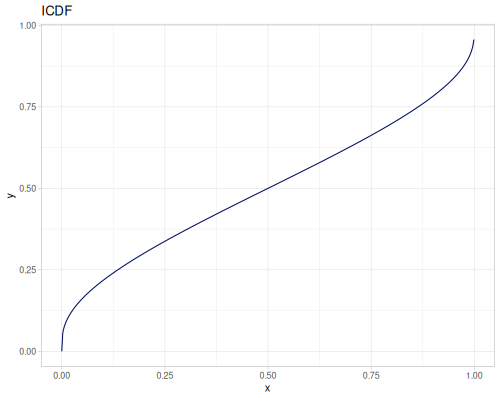 |
(def dirichlet3 (r/distribution :dirichlet {:alpha [3 1 3]}))(r/sample dirichlet3) ;; => [0.35468848696827415 0.04162425855397151 0.6036872544777543]
(r/sample dirichlet3) ;; => [0.427520149833052 0.2788316379022029 0.2936482122647451]
(r/pdf dirichlet3 [0.2 0.3 0.5]) ;; => 1.8000000000000003
(r/pdf dirichlet3 [0.3 0.5 0.2]) ;; => 0.648
(r/pdf dirichlet3 [0.5 0.2 0.3]) ;; => 4.05
(r/means dirichlet3) ;; => (0.42857142857142855 0.14285714285714285 0.42857142857142855)
(r/covariance dirichlet3) ;; => [[0.03061224489795918 -0.007653061224489796 -0.02295918367346939] [-0.007653061224489796 0.015306122448979591 -0.007653061224489796] [-0.02295918367346939 -0.007653061224489796 0.03061224489795918]]Multi normal
- Name:
:multi-normal - Default parameters
:means, vector:[0 0]:covariances, vector of vectors (row-wise matrix):[[1 0] [0 1]]
- wiki, source
|
| 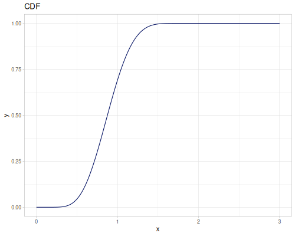 |
|
|
 |
Multinomial
- Name:
:multinomial - Default parameters
:ps, probabilities or weights, vector:[0.5 0.5]:trials: \(20\)
- wiki, source
(def multinomial (r/distribution :multinomial {:trials 150 :ps [1 2 3 4 5]}))(r/sample multinomial) ;; => [15 18 28 31 58]
(r/sample multinomial) ;; => [7 20 29 39 55]
(r/pdf multinomial [10 10 10 10 110]) ;; => 3.9088379874482466E-28
(r/pdf multinomial [10 20 30 40 50]) ;; => 8.791729390927823E-5
(r/pdf multinomial [110 10 10 10 10]) ;; => 4.955040820983416E-98
(r/means multinomial) ;; => (10.0 20.0 30.0 40.0 50.0)
(r/covariance multinomial) ;; => [[9.333333333333334 -1.3333333333333333 -2.0 -2.6666666666666665 -3.333333333333333] [-1.3333333333333333 17.333333333333336 -4.0 -5.333333333333333 -6.666666666666666] [-2.0 -4.0 24.0 -8.0 -10.0] [-2.6666666666666665 -5.333333333333333 -8.0 29.333333333333336 -13.333333333333332] [-3.3333333333333335 -6.666666666666667 -10.0 -13.333333333333334 33.333333333333336]]Mixture
| name | parameters |
|---|---|
|
|
Mixture distribution
Creates a distribution from other distributions and weights.
- Name:
:mixture - Default parameters:
:distrs, list of distributions:[default-normal]:weights, list of weights:[1.0]
- wiki
Please note: set-seed! doesn’t affect distributions which are part of the mixture
(def three-normals
(r/distribution :mixture {:distrs [(r/distribution :normal {:mu -2 :sd 2})
(r/distribution :normal)
(r/distribution :normal {:mu 2 :sd 0.5})]
:weights [2 1 3]}))(def mixture-of-three
(r/distribution :mixture {:distrs [(r/distribution :gamma)
(r/distribution :laplace)
(r/distribution :log-logistic)]
:weights [2 1 3]}))| three normals | gamma, laplace and log-logistic |
 |
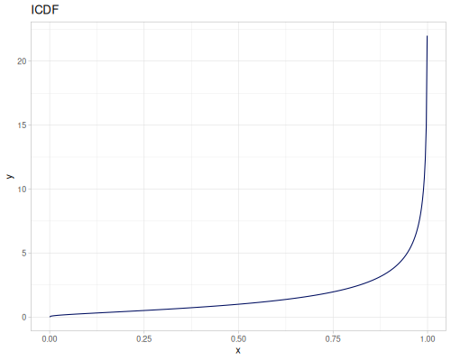 |
(r/sample mixture-of-three) ;; => 2.1024222728688975
(r/sample mixture-of-three) ;; => 0.24936552466521975
(r/pdf mixture-of-three 0) ;; => 0.08333333333333333
(r/pdf mixture-of-three 1) ;; => 0.45620084174033965
(r/pdf mixture-of-three 2) ;; => 0.14666525453903217
(r/cdf mixture-of-three 0) ;; => 0.08333333333333333
(r/cdf mixture-of-three 1) ;; => 0.4160780500460631
(r/cdf mixture-of-three 2) ;; => 0.6879135433937651
(r/icdf mixture-of-three 0.01) ;; => -2.1202635780176586
(r/icdf mixture-of-three 0.5) ;; => 1.2029317631660499
(r/icdf mixture-of-three 0.99) ;; => 10.808075578087667
(r/mean mixture-of-three) ;; => 1.937933121411406
(r/variance mixture-of-three) ;; => 5.7869481264261236
(r/lower-bound mixture-of-three) ;; => ##-Inf
(r/upper-bound mixture-of-three) ;; => ##InfTruncated
| name | parameters |
|---|---|
| truncated | |
- Name:
:truncated - Default parameters
:distr, distribution to truncate:default-normal:left, lower boundary:right, upper boundary
- wiki
By default boundaries are the same as boundaries from a distributions. This way you can make one side truncation.
Please note: derived mean or variance is not calculated. Also, set-seed! doesn’t affect original distribution.
(def truncated-normal (r/distribution :truncated {:distr r/default-normal
:left -2 :right 2}))(def left-truncated-laplace (r/distribution :truncated {:distr (r/distribution :laplace)
:left -0.5}))| truncated normal | trucated levy (left side) |
| 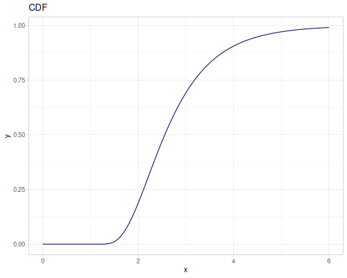 |
(r/sample truncated-normal) ;; => 0.15195389659943073
(r/sample truncated-normal) ;; => -1.3725954153838884
(r/pdf truncated-normal 2.0000001) ;; => 0.0
(r/pdf truncated-normal 2.0) ;; => 0.0565646741125192
(r/cdf truncated-normal 2.0) ;; => 1.0
(r/cdf truncated-normal 0.0) ;; => 0.5000000000000001
(map (partial r/icdf truncated-normal) [1.0E-4 0.5 0.9999]) ;; => (-1.9982352293163053 -1.3914582123358836E-16 1.9982352293163053)
(r/lower-bound truncated-normal) ;; => -2.0
(r/upper-bound truncated-normal) ;; => 2.0From data
All below distributions can be constructed from datasets or list of values with probabilities.
| name | parameters | continuous? |
|---|---|---|
|
|
|
|
|
|
|
|
|
|
|
|
|
|
|
|
|
|
|
|
|
|
|
Continuous
Continous distribution build from data is based on KDE (Kernel Density Estimation) and PDF integration for CDF and iCDF. Mean and variance are calculated from samples.
:continous-distribution and :kde are two names for the same distribution
- Name:
:continuous-distributionor:kde - Default parameters:
:data, samples, sequence of numbers:kde, density estimation kernel::epenechnikov:bandwidth, KDE bandwidth, smoothing parameter:nil(auto):steps, number of steps for PDF integration: 5000:min-iterations, number of PDF integrator iterations:nil(default):interpolator, CDF/iCDF interpolator for PDF integration:nil(default,:linear)
- wiki, pdf integration
(def random-data (repeatedly 1000 (fn [] (+ (* (r/drand -2 2) (r/drand -2 2))
(m/sqrt (* (r/drand) (r/drand)))))))(def kde-distr (r/distribution :continuous-distribution {:data random-data}))| default | bandwidth=1.0 |
| gaussian kernel | triangular kernel, bandwidth=0.1 |
| 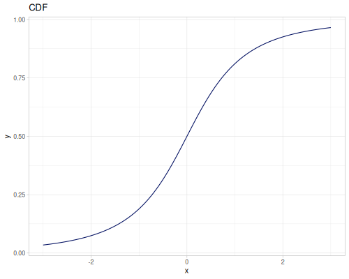 |
(r/sample kde-distr) ;; => 1.3010180190418532
(r/sample kde-distr) ;; => -0.7693030506440562
(r/pdf kde-distr 0.0) ;; => 0.2895732291670891
(r/cdf kde-distr 0.0) ;; => 0.31552593767229803
(map (partial r/icdf kde-distr) [1.0E-4 0.5 0.9999]) ;; => (-4.036565369328684 0.49883262884502827 5.012273231015241)
(r/lower-bound kde-distr) ;; => -4.1635203556799745
(r/upper-bound kde-distr) ;; => 5.139228217366505
(r/mean kde-distr) ;; => 0.5262235226230889
(r/variance kde-distr) ;; => 1.8233876483481286Kernels
Distributions for various kernels: * :data: [-2 -2 -2 -1 0 1 2 -1 0 1 2 0 1 2 1 2 2] * :steps: 100 * :bandwidth: auto
fastmath.kernel/kernel-list contains three types of kernels: RBF, KDE and what we can call “vector kernels” which includes Marcer, positive definite, and similar.
| Type | Kernels |
|---|---|
|
|
|
|
|
|
KDE kernels
|
|
|
|
|
|
|
|
|
|
|
|
|
|
|
|
|
|
|
|
|
|
|
|
|
|
|
Empirical
Empirical distribution calculates PDF, CDF and iCDF from a histogram.
- Name:
:empirical - Default parameters
:data, samples, sequence of numbers:bin-count, number of bins for histogram: 10% of the size of the data
- wiki, source
(def empirical-distr (r/distribution :empirical {:data random-data}))| default | bin-count=10 |
 |
(r/sample empirical-distr) ;; => -0.7442668749782081
(r/sample empirical-distr) ;; => 0.517789387526483
(r/pdf empirical-distr 0.0) ;; => 0.3367652060230363
(r/cdf empirical-distr 0.0) ;; => 0.3060844150814384
(map (partial r/icdf empirical-distr) [1.0E-4 0.5 0.9999]) ;; => (-3.8445695885397138 0.49402601627672765 4.820277450226245)
(r/lower-bound empirical-distr) ;; => -3.8445695885397138
(r/upper-bound empirical-distr) ;; => 4.820277450226245
(r/mean empirical-distr) ;; => 0.5262235226230891
(r/variance empirical-distr) ;; => 1.8233876483481297Discrete
- Default parameters
:data, sequence of numbers (integers/longs or doubles):probabilities, optional, probabilities or weights
- wiki, source1, source2
Please note: data can contain duplicates.
There are four discrete distributions: * :enumerated-int for integers, backed by Apache Commons Math * :enumerated-real for doubles, backed by Apache Commons Math * :integer-discrete-distribution - for longs, custom implementation * :real-discrete-distribution - for doubles, custom implementation
Please note:
- Apache Commons Math implementation have some issues with iCDF.
:integer-discrete-distributionis backed byclojure.data.int-map
Doubles
(def data-doubles (repeatedly 100 #(m/sq (m/approx (r/drand 2.0) 1)))) |
|
(def real-distr (r/distribution :real-discrete-distribution {:data [0.1 0.2 0.3 0.4 0.3 0.2 0.1]
:probabilities [5 4 3 2 1 5 4]}))(r/sample real-distr) ;; => 0.1
(r/sample real-distr) ;; => 0.1
(r/pdf real-distr 0.1) ;; => 0.375
(r/pdf real-distr 0.15) ;; => 0.0
(r/cdf real-distr 0.2) ;; => 0.75
(map (partial r/icdf real-distr) [1.0E-4 0.5 0.9999]) ;; => (0.1 0.2 0.4)
(r/lower-bound real-distr) ;; => 0.1
(r/upper-bound real-distr) ;; => 0.4
(r/mean real-distr) ;; => 0.19583333333333333
(r/variance real-distr) ;; => 0.008732638888888894Integers / Longs
(def data-ints (repeatedly 500 #(int (m/sqrt (r/drand 100.0))))) |
|
(def int-distr (r/distribution :integer-discrete-distribution {:data [10 20 30 40 30 20 10]
:probabilities [5 4 3 2 1 5 4]}))(r/sample int-distr) ;; => 10
(r/sample int-distr) ;; => 20
(r/pdf int-distr 10) ;; => 0.375
(r/pdf int-distr 15) ;; => 0.0
(r/cdf int-distr 20) ;; => 0.75
(map (partial r/icdf int-distr) [1.0E-4 0.5 0.9999]) ;; => (10 20 40)
(r/lower-bound int-distr) ;; => 10.0
(r/upper-bound int-distr) ;; => 40.0
(r/mean int-distr) ;; => 19.583333333333332
(r/variance int-distr) ;; => 87.32638888888891Categorical
Categorical distribution is a discrete distribution which accepts any data.
- Name:
:categorical-distribution - Default parameters:
:data, sequence of any values:probabilities, optional, probabilities or weights
Order for CDF/iCDF is created by calling (distinct data). If sorted data is needed, external sort is necessary. lower-bound and upper-bound are not defined though.
(def cat-distr (r/distribution :categorical-distribution {:data (repeatedly 100 #(rand-nth [:a :b nil "s"]))}))(r/sample cat-distr) ;; => nil
(r/sample cat-distr) ;; => "s"
(r/pdf cat-distr nil) ;; => 0.22000000000000006
(r/pdf cat-distr "ss") ;; => 0.0
(r/cdf cat-distr :b) ;; => 0.4900000000000001
(map (partial r/icdf cat-distr) [1.0E-4 0.5 0.9999]) ;; => ("s" nil :a)Sequences
Sequence generators can create random or quasi random vector with certain property like low discrepancy or from ball/sphere.
There are two multimethods:
| Symbol | Info |
|---|---|
|
Lazy sequence of generated vectors (for dim>1) or primitives (for dim=1) |
|
Adds jittering, works only for low discrepancy sequences |
Parameters:
seq-generator- generator namedimensions- vector dimensionality, 1 for primitivejitter- only for jittered sequences, from 0.0 to 1.0, default 0.25
For given dimensionality, returns sequence of:
- 1 - doubles
- 2 -
Vec2type - 3 -
Vec3type - 4 -
Vec4type - n>4 - Clojure vector
Vec2, Vec3 and Vec4 are fixed size vectors optimized for speed. They act exactly like 2,3 and 4 elements Clojure vectors
Low discrepancy
There are 3 types of sequences:
:sobol- up to 1000 dimensions, wiki, source:halton- up to 40 dimensions, wiki, source:r2- up to 15 dimensions, info
1000 samples from each of the sequence type without and with jittering
| :sobol | :halton | :r2 |
| :sobol (jittered) | :halton (jittered) | :r2 (jittered) |
(first (r/sequence-generator :sobol 4)) ;; => #vec4 [0.0, 0.0, 0.0, 0.0]
(first (r/jittered-sequence-generator :sobol 4)) ;; => #vec4 [0.02900236218752402, 0.03321895859029258, 0.03343024406202439, 0.01735820373097604]
(first (r/sequence-generator :halton 3)) ;; => #vec3 [0.0, 0.0, 0.0]
(first (r/jittered-sequence-generator :halton 3)) ;; => #vec3 [0.00988332128494876, 0.163602670427742, 0.09647432740056015]
(first (r/sequence-generator :r2 2)) ;; => #vec2 [0.2548776662466927, 0.06984029099805333]
(first (r/jittered-sequence-generator :r2 2)) ;; => #vec2 [0.29704197409033695, 0.07653356059721561]15 dimensional sequence
(take 2 (r/sequence-generator :r2 15))([0.45625055763798894
0.4144151289829652
0.37440997700257395
0.33615502811293263
0.2995737119048001
0.26459280788164197
0.231142298902816
0.19915523103853916
0.16856757955612012
0.13931812076922045
0.11134830949363828
0.08460216186433356
0.05902614327914302
0.03456906124489478
0.01118196291144713]
[0.4125011152759779
0.32883025796593035
0.2488199540051479
0.17231005622586526
0.09914742380960018
0.029185615763283934
0.962284597805632
0.8983104620770783
0.8371351591122402
0.7786362415384409
0.7226966189872766
0.6692043237286671
0.6180522865582859
0.5691381224897896
0.5223639258228941])One dimensional sequence is just a sequence of numbers
(take 20 (r/sequence-generator :sobol 1))(0.0
0.5
0.75
0.25
0.375
0.875
0.625
0.125
0.1875
0.6875
0.9375
0.4375
0.3125
0.8125
0.5625
0.0625
0.09375
0.59375
0.84375
0.34375)Sphere and ball
Unit sphere or unit ball sequences can generate any dimension.
500 samples
|
|
(first (r/sequence-generator :sphere 4)) ;; => #vec4 [-0.48707850521560003, -0.028816200946707938, -0.4911066450850289, -0.7216220752397083]
(first (r/sequence-generator :ball 3)) ;; => #vec3 [0.6106439662537149, -0.19719273807051046, -0.5338472481721354]20 dimensional sequence
(take 2 (r/sequence-generator :sphere 20))([0.34564087547651245
-0.22780922628555975
0.02082362544317918
-0.0014336599229924855
0.1353450904572586
-0.07211011060847775
-0.03647395340371338
0.22598931553390525
-0.0677910169860069
-0.35916833943523097
-0.5691422042849846
-0.1512659853863761
0.12847597803081956
0.1813940732319407
0.14388126723920308
-0.2325041017248038
-0.2664805994590524
0.1877384907940976
-0.09080529612207176
-0.1822226673141288]
[0.21550664778694553
-0.3172247093989102
-0.029535920768301763
-0.14597945472306073
0.07758777326820529
-0.054343879105732004
0.3383562835562005
-0.21535678282385634
0.24697155121121514
-0.2026315513588496
-0.19618560066523433
-0.15595154789040414
-0.5535928185557034
-0.21870188172752264
-0.27523452551873406
0.11877956336500128
0.17617156459598105
-0.07809022283095265
-0.010607142473992654
0.12098357494733271])Uniform and Gaussian
Additionally uniform and gaussian N(0,1) sequences can generate any number of dimensions. They rely on default-rng
:default- uniform distribution U(0,1):gaussian- gaussian, normal distribution, N(0,1) for each dimension
1000 samples
| :default | :gaussian |
(first (r/sequence-generator :default 4)) ;; => #vec4 [0.47512411831706514, 0.9192840007208322, 0.8915903760933624, 0.5999298799277241]
(first (r/sequence-generator :gaussian 3)) ;; => #vec3 [-0.5036463956341344, -0.32895615013785706, 0.4149779826362254]Noise
Value, gradient and simplex noises plus various combinations. 1d ,2d and 3d versions are prepared.
Generation
There are four main methods of noise creation:
| Symbol | Info |
|---|---|
|
single frequency (octave) noise |
|
multi frequency (octaves), fractal brownian motion |
|
multi frequency, "billowy" noise |
|
multi frequency, ridged multi-fractal |
Each noise can be configured in, here is the list of options:
:seed- seed for noise randomness:noise-type:value- value noise:gradient(default) - gradient noise (Perlin):simplex- OpenSimplex noise
:interpolation- interpolation between knots, only for value and gradient noise:none:linear:hermite(default):quintic
:octaves(default: 6) - number of frequencies/octaves for multi frequency creators:lacunarity(default: 2) - noise length (1/frequency) for each octave:gain(default: 0.5) - amplitude factor for each octave:normalize?(default: true) - if true, range is[0,1],[-1,1]otherwise.
more info about octaves, gain and lacunarity.
Single
(def single-g-noise (r/single-noise {:noise-type :gradient :seed 1}))(single-g-noise 0.2) ;; => 0.23759999999999998
(single-g-noise 0.2 0.3) ;; => 0.48526400000000003
(single-g-noise 0.2 0.3 0.4) ;; => 0.660938496Single octave of simplex noise:
Value and gradient single noise for different interpolations
|
|
|
|
|
| value | ||||
| gradient |
FBM
(def fbm-noise (r/fbm-noise {:noise-type :gradient :octaves 3 :seed 1}))(fbm-noise 0.2) ;; => 0.7029714285714286
(fbm-noise 0.2 0.3) ;; => 0.44446811428571426
(fbm-noise 0.2 0.3 0.4) ;; => 0.548253446 octave of simplex noise:
Value and gradient FBM noise for different interpolations
|
|
|
|
|
| value | ||||
| gradient |  |
Different number of octaves for FBM gradient noise
| octaves=2 | octaves=4 | octaves=6 | octaves=8 |
Different gains and lacunarities for FBM gradient noise
| lacunarity=0.5 | lacunarity=2 | lacunarity=5 | lacunarity=8 | |
| gain=0.25 | ||||
| gain=0.5 | ||||
| gain=0.75 |
Billow
(def billow-noise (r/billow-noise {:seed 1}))
| simplex noise | value noise | gradient noise, 1 octave |
(billow-noise 0.2) ;; => 0.3879619047619048
(billow-noise 0.2 0.3) ;; => 0.1804361142857142
(billow-noise 0.2 0.3 0.4) ;; => 0.11801290199365083Ridged Multi
(def ridgedmulti-noise (r/ridgedmulti-noise {:seed 1}))| simplex noise | value noise | gradient noise, 1 octave |
(ridgedmulti-noise 0.2) ;; => 0.33387061650044203
(ridgedmulti-noise 0.2 0.3) ;; => 0.6479155481384621
(ridgedmulti-noise 0.2 0.3 0.4) ;; => 0.786227445531883Predefined
There are three ready to use preconfigured noises:
| Symbol | Info |
|---|---|
|
FBM value noise, 6 octaves, hermite interpolation |
|
Perlin noise, FBM gradient noise, 6 octaves, quintic interpolation |
|
FBM simplex noise |
| vnoise | noise | simplex |
(r/vnoise 0.2) ;; => 0.647640204817908
(r/vnoise 0.2 0.3) ;; => 0.5122428466559017
(r/vnoise 0.2 0.3 0.4) ;; => 0.611841591392663
(r/noise 0.2) ;; => 0.40716749206349206
(r/noise 0.2 0.3) ;; => 0.46690703571301584
(r/noise 0.2 0.3 0.4) ;; => 0.47163620141223744
(r/simplex 0.2) ;; => 0.3699264548571428
(r/simplex 0.2 0.3) ;; => 0.22110281086915717
(r/simplex 0.2 0.3 0.4) ;; => 0.3985014003809524Warping
Warp noise info
| Symbol | Info |
|---|---|
|
Create warp noise |
Default parameters: * noise - any noise function: vnoise * scale: \(4.0\) * depth: \(1\)
| vnoise | noise | simplex | |
| scale=2 |  |
||
| scale=4 |
Random configuration
For generative art purposes it’s good to generate random configuration and noise based on it.
| Symbol | Info |
|---|---|
|
Create random configuration |
|
Create random noise from random configuration |
Optional parameter is a map with values user wants to fix.
(r/random-noise-cfg){:interpolation :none,
:warp-scale 0.0,
:seed 665844940,
:normalize? true,
:noise-type :value,
:lacunarity 1.90872786462909,
:gain 0.24908653479282347,
:generator :single,
:warp-depth 1,
:octaves 6}(r/random-noise-cfg {:seed 1}){:interpolation :linear,
:warp-scale 4.0,
:seed 1,
:normalize? true,
:noise-type :gradient,
:lacunarity 1.8874943472437105,
:gain 0.508204375355278,
:generator :single,
:warp-depth 1,
:octaves 3}(def some-random-noise (r/random-noise-fn {:seed 1}))(some-random-noise 0.2) ;; => 0.6132986748816055
(some-random-noise 0.2 0.3) ;; => 0.4610298555750632
(some-random-noise 0.2 0.3 0.4) ;; => 0.3832626675062615Discrete noise
Discrete noise is a function which hashes long or two longs and converts it to a double from [0,1] range.
| Symbol | Info |
|---|---|
|
1d or 2d hashing function |
(r/discrete-noise 100) ;; => 0.07493987729537295
(r/discrete-noise 101) ;; => 0.9625321542669703
(r/discrete-noise 200 100) ;; => 0.6713155553076955
(r/discrete-noise 200 101) ;; => 0.22706653793671472Reference
fastmath.random
Various random and noise functions.
Namespace defines various random number generators (RNGs), different types of random functions, sequence generators and noise functions.
### RNGs
You can use a selection of various RNGs defined in Apache Commons Math library.
Currently supported RNGs:
:jdk- default java.util.Random:mersenne- MersenneTwister:isaac- ISAAC:well512a,:well1024a,:well19937a,:well19937c,:well44497a,:well44497b- several WELL variants
To create your RNG use rng multimethod. Pass RNG name and (optional) seed. Returned RNG is equipped with RNGProto protocol with methods: irandom, lrandom, frandom drandom, grandom, brandom which return random primitive value with given RNG.
(let [rng (rng :isaac 1337)]
(irandom rng))For conveniency default RNG (:jdk) with following functions are created: irand, lrand, frand, drand, grand, brand.
Each prefix denotes returned type:
- i - int
- l - long
- f - float
- d - double
- g - gaussian (double)
- b - boolean
Check individual function for parameters description.
### Random Vector Sequences
Couple of functions to generate sequences of numbers or vectors.
To create generator call sequence-generator with generator name and vector size. Following generators are available:
:halton- Halton low-discrepancy sequence; range [0,1]:sobol- Sobol low-discrepancy sequence; range [0,1]:r2- R2 low-discrepancy sequence; range [0,1], more…:sphere- uniformly random distributed on unit sphere:ball- uniformly random distributed from unit ball:gaussian- gaussian distributed (mean=0, stddev=1):default- uniformly random; range:[0,1]
:halton, :sobol and :r2 can be also randomly jittered according to this article. Call jittered-sequence-generator.
After creation you get lazy sequence
### Noise
List of continuous noise functions (1d, 2d and 3d):
:value- value noise:gradient- gradient noise (improved Ken Perlin version):simplex- simplex noise
First two (:value and :gradient) can use 4 different interpolation types: :none, :linear, :hermite (cubic) and :quintic.
All can be combined in following variants:
- Noise - pure noise value, create with single-noise
- FBM - fractal brownian motion, create with fbm-noise
- Billow - billow noise, billow-noise
- RidgedMulti - ridged multi, ridgedmulti-noise
Noise creation requires detailed configuration which is simple map of following keys:
:seed- seed as integer:noise-type- type of noise::value,:gradient(default),:simplex:interpolation- type of interpolation (for value and gradient)::none,:linear,:hermite(default) or:quintic:octaves- number of octaves for combined noise (like FBM), default: 6:lacunarity- scaling factor for combined noise, default: 2.00:gain- amplitude scaling factor for combined noise, default: 0.5:normalize?- should be normalized to[0,1]range (true, default) or to[-1,1]range (false)
For usage convenience 3 ready to use functions are prepared. Returning value from [0,1] range:
- noise - Perlin Noise (gradient noise, 6 octaves, quintic interpolation)
- vnoise - Value Noise (as in Processing, 6 octaves, hermite interpolation)
- simplex - Simplex Noise (6 octaves)
For random noise generation you can use random-noise-cfg and random-noise-fn. Both can be feed with configuration. Additional configuration:
:generatorcan be set to one of the noise variants, defaults to:fbm:warp-scale- 0.0 - do not warp, >0.0 warp:warp-depth- depth for warp (default 1.0, if warp-scale is positive)
#### Discrete Noise
discrete-noise is a 1d or 2d hash function for given integers. Returns double from [0,1] range.
### Distribution
Various real and integer distributions. See DistributionProto and RNGProto for functions.
To create distribution call distribution multimethod with name as a keyword and map as parameters.
->seq
(->seq)(->seq rng)(->seq rng n)(->seq rng n sampling-method)
Returns lazy sequence of random samples (can be limited to optional n values).
Additionally one of the sampling methods can be provided, ie: :uniform, :antithetic, :systematic and :stratified.
ball-random
(ball-random dims)(ball-random rng dims)
Return random vector from a ball
billow-noise
(billow-noise)(billow-noise cfg__15508__auto__)
Create billow-noise function with optional configuration.
brand
Random boolean with default RNG.
Returns true or false with equal probability. You can set p probability for true
brandom
(brandom rng)(brandom rng p)
Random boolean with provided RNG
ccdf
(ccdf d v)
Complementary cumulative probability.
cdf
(cdf d v)(cdf d v1 v2)
Cumulative probability.
continuous?
(continuous? d)
Does distribution support continuous domain?
covariance
(covariance d)
Distribution covariance matrix (for multivariate distributions)
default-normal
Default normal distribution (u=0.0, sigma=1.0).
default-rng
Default RNG - JDK
dimensions
(dimensions d)
Distribution dimensionality
discrete-noise
(discrete-noise X Y)(discrete-noise X)
Discrete noise. Parameters:
- X (long)
- Y (long, optional)
Returns double value from [0,1] range
distribution
Create distribution object.
- First parameter is distribution as a
:key. - Second parameter is a map with configuration.
All distributions accept rng under :rng key (default: default-rng) and some of them accept inverse-cumm-accuracy (default set to 1e-9).
distribution-id
(distribution-id d)
Distribution identifier as keyword.
distribution-parameters
(distribution-parameters d)(distribution-parameters d all?)
Distribution highest supported value.
When all? is true, technical parameters are included, ie: :rng and :inverser-cumm-accuracy.
distribution?
(distribution? distr)
Checks if distr is a distribution object.
distributions-list
List of distributions.
drand
(drand)(drand mx)(drand mn mx)
Random double number with default RNG.
As default returns random double from [0,1) range. When mx is passed, range is set to [0, mx). When mn is passed, range is set to [mn, mx).
drandom
(drandom rng)(drandom rng mx)(drandom rng mn mx)
Random double number with provided RNG
fbm-noise
(fbm-noise)(fbm-noise cfg__15508__auto__)
Create fbm-noise function with optional configuration.
flip
(flip p)(flip)
Returns 1 with given probability, 0 otherwise
flip-rng
(flip-rng rng p)(flip-rng rng)
Returns 1 with given probability, 0 otherwise, for given rng
flipb
(flipb p)(flipb)
Returns true with given probability, false otherwise
flipb-rng
(flipb-rng rng p)(flipb-rng rng)
Returns true with given probability, false otherwise, for given rng
frand
(frand)(frand mx)(frand mn mx)
Random double number with default RNG.
As default returns random float from [0,1) range. When mx is passed, range is set to [0, mx). When mn is passed, range is set to [mn, mx).
frandom
(frandom rng)(frandom rng mx)(frandom rng mn mx)
Random double number with provided RNG
grand
(grand)(grand stddev)(grand mean stddev)
Random gaussian double number with default RNG.
As default returns random double from N(0,1). When std is passed, N(0,std) is used. When mean is passed, distribution is set to N(mean, std).
grandom
(grandom rng)(grandom rng stddev)(grandom rng mean stddev)
Random gaussian double number with provided RNG
icdf
(icdf d v)
Inverse cumulative probability
integrate-pdf
(integrate-pdf pdf-func mn mx steps)(integrate-pdf pdf-func {:keys [mn mx steps interpolator], :or {mn 0.0, mx 1.0, steps 1000, interpolator :linear}, :as options})
Integrate PDF function, returns CDF and iCDF
Parameters: * pdf-func - univariate function * mn - lower bound for integration, value of pdf-func should be 0.0 at this point * mx - upper bound for integration * steps - how much subintervals to integrate (default 1000) * interpolator - interpolation method between integrated points (default :linear)
Also other integration related parameters are accepted (:gauss-kronrod integration is used).
Possible interpolation methods: :linear (default), :spline, :monotone or any function from fastmath.interpolation
irand
(irand)(irand mx)(irand mn mx)
Random integer number with default RNG.
As default returns random integer from full integer range. When mx is passed, range is set to [0, mx). When mn is passed, range is set to [mn, mx).
irandom
(irandom rng)(irandom rng mx)(irandom rng mn mx)
Random integer number with provided RNG
jittered-sequence-generator
(jittered-sequence-generator seq-generator dimensions)(jittered-sequence-generator seq-generator dimensions jitter)
Create jittered sequence generator.
Suitable for :r2, :sobol and :halton sequences.
jitter parameter range is from 0 (no jitter) to 1 (full jitter). Default: 0.25.
See also sequence-generator.
likelihood
(likelihood d vs)
Likelihood of samples
log-likelihood
(log-likelihood d vs)
Log likelihood of samples
lower-bound
(lower-bound d)
Distribution lowest supported value
lpdf
(lpdf d v)
Log density
lrand
(lrand)(lrand mx)(lrand mn mx)
Random long number with default RNG.
As default returns random long from full integer range. When mx is passed, range is set to [0, mx). When mn is passed, range is set to [mn, mx).
lrandom
(lrandom rng)(lrandom rng mx)(lrandom rng mn mx)
Random long number with provided RNG
mean
(mean d)
Distribution mean
means
(means d)
Distribution means (for multivariate distributions)
noise
(noise x)(noise x y)(noise x y z)
Improved Perlin Noise.
6 octaves, quintic interpolation.
noise-generators
List of possible noise generators as a map of names and functions.
noise-interpolations
List of possible noise interpolations as a map of names and values.
noise-types
List of possible noise types as a map of names and values.
observe MACRO
(observe d vs)
Log likelihood of samples. Alias for log-likelihood.
observe1
(observe1 d v)
Log of probability/density of the value. Alias for lpdf.
(pdf d v)
Density
probability
(probability d v)
Probability (PMF)
random-noise-cfg
(random-noise-cfg pre-config)(random-noise-cfg)
Create random noise configuration.
Optional map with fixed values.
random-noise-fn
(random-noise-fn cfg)(random-noise-fn)
Create random noise function from all possible options.
Optionally provide own configuration cfg. In this case one of 4 different blending methods will be selected.
randval MACRO
(randval v1 v2)(randval prob v1 v2)(randval prob)(randval)
Return value with given probability (default 0.5)
randval-rng MACRO
(randval-rng rng v1 v2)(randval-rng rng prob v1 v2)(randval-rng rng prob)(randval-rng rng)
Return value with given probability (default 0.5), for given rng
ridgedmulti-noise
(ridgedmulti-noise)(ridgedmulti-noise cfg__15508__auto__)
Create ridgedmulti-noise function with optional configuration.
rng
Create RNG for given name (as keyword) and optional seed. Return object enhanced with RNGProto. See: rngs-list for names.
rngs-list
List of all possible RNGs.
roll-a-dice
(roll-a-dice sides)(roll-a-dice dices sides)
Roll a dice with given sides
roll-a-dice-rng
(roll-a-dice-rng rng sides)(roll-a-dice-rng rng dices sides)
Roll a dice with given sides and given rng
sample
(sample d)
Random sample
sequence-generator
Create Sequence generator. See sequence-generators-list for names.
Values:
:r2,:halton,:sobol,:default/:uniform- range[0-1] for each dimension:gaussian- fromN(0,1)distribution:sphere- from surface of unit sphere (ie. euclidean distance from origin equals 1.0):ball- from an unit ball
Possible dimensions:
:r2- 1-15:halton- 1-40:sobol- 1-1000- the rest - 1+
See also jittered-sequence-generator.
sequence-generators-list
List of random sequence generator. See sequence-generator.
set-seed
(set-seed)(set-seed v)(set-seed rng v)
Create and return new RNG
set-seed!
(set-seed!)(set-seed! v)(set-seed! rng v)
Sets seed.
simplex
(simplex x)(simplex x y)(simplex x y z)
Simplex noise. 6 octaves.
single-noise
(single-noise)(single-noise cfg__15508__auto__)
Create single-noise function with optional configuration.
source-object
(source-object d)
Returns Java or proxy object from backend library (if available)
synced-rng
(synced-rng m)(synced-rng m seed)
Create synchronized RNG for given name and optional seed. Wraps rng method.
upper-bound
(upper-bound d)
Distribution highest supported value
variance
(variance d)
Distribution variance
vnoise
(vnoise x)(vnoise x y)(vnoise x y z)
Value Noise.
6 octaves, Hermite interpolation (cubic, h01).
warp-noise-fn
(warp-noise-fn noise scale depth)(warp-noise-fn noise scale)(warp-noise-fn noise)(warp-noise-fn)
Create warp noise (see Inigo Quilez article).
Parameters:
- noise function, default: vnoise
- scale factor, default: 4.0
- depth (1 or 2), default 1
Normalization of warp noise depends on normalization of noise function.
source: clay/random.clj